Original Mpnally Tutorial
PART I – Generalities and talking heads
Introduction
The primary goal of our software is to help developers design and implement integrated systems composed of multiple applications that follow the REST model and can be deployed on clouds.
A great deal has been written about the advantages of REST as a model for writing applications, but it is still quite rare to see people doing it well. By contrast, many people are doing a form of Remote Procedure Call (RPC) over HTTP and erroneously calling it REST. In order to do REST, it is not sufficient to use GET, PUT, POST and DELETE methods – REST is a hypermedia model where you use the URLs embedded in one resource [’s representation] to navigate to another. If you are doing any of the following, you are probably not doing REST
- Clients commonly compose URLs by concatenating strings.
- You use the words ‘service’ or ‘parameter’ in the description of your API.
- The representations of your resources include internal IDs for resources instead of URLs.
Using a REST model is not a priori a good thing, and doing something other than REST is not necessarily a bad thing, but saying you are doing REST and then doing something different is bad.
We became interested in the REST model as a solution to problems we had struggled for many years to solve using other techniques. Our problem was not implementing individual applications – there are lots of technologies for that – but rather implementing a coherent system made up of many applications that talk to each other. Without going into too much detail, we had previously tried two primary approaches and found each to have major issues. The first approach was the ‘central repository’ approach and the second approach is the one that in recent years has come to be called ‘SOA’. Integrating applications around a central database (or repository) solves the problem of allowing applications to reference each other’s data – which is actually the primary problem of integration – but it has major problems of scaling in both the computer performance sense and the human coordination sense. The problem with SOA systems is that each SOA API is unique, and the way you reference data held by a service is specific to that service, so the number of unique interfaces each module has to understand can be large, and any change in any interface or any addition of any new component requires changes to the code of all its neighbors. We have years of experience of the pains of both these approaches. We have believed for some time that a ‘true’ REST model is a superior approach for addressing this problem and are beginning to accumulate a little objective evidence to support the claim.
Unfortunately, the term REST is so misused and misunderstood as to have lost a great deal of its useful meaning. There is another term that we find more useful – Linked Data. In the context of system development, Linked Data primarily means two things to us:
- A strict interpretation of REST
- The use of RDF as the model for data
Even amongst the people who really ‘get’ REST (bad pun), there is often resistance to the use of RDF. We are proponents of RDF for two reasons:
- We think that if you invent your own data model that addresses the issues associated with representing data in the context of REST, you will end up with much more commonality with RDF than you might at first expect – you will invent a sort of ‘homemade RDF’.
- With a little effort, RDF can be made quite consumable, so that those who are comfortable with simple JSON structures will be largely happy with the result. Using RDF will simply provide some good answers to inevitable questions on how to structure the JSON that would be confronted by any designer or developer using JSON in a REST context.
We have developed a light-weight framework that facilitates the implementation of systems using the Linked Data model. One of the smartest people I ever knew told me once that the definition of a framework is ‘something that everyone wants to write and nobody wants to use’. Nevertheless we think there is value in both the implementation itself and in the ideas it embodies. This document is primarily concerned with describing the framework, the ideas behind it and how it is used. We will also describe how we have deployed systems written with the framework in various cloud environments.
Our framework is composed of a server-side component and a client-side component. The server-side component is written in Python and is two or three thousand lines of code. About 75% of that would have to be ported to other languages to support application development in those languages. We have not yet done these ports, so currently you have to write server applications in Python to use our framework. The rest of the server code takes the form of subsystems that implement standard system functions – authentication, access control and multi-tenancy – that are accessed as HTTP resources and so can remain in Python even on a system that implements applications in other languages. The client code consists of a little over 1000 lines of Javascript in the form of libraries of helper methods for various common tasks. There is almost no framework code on the client – you can write your clients using whatever Javascript frameworks you like and still use our libraries. There are also a few hundred lines of shell scripts that deploy a build machine for our applications, build the applications, and deploy systems built with the frameworks to various clouds in various topologies. Lastly, there are a several hundred lines of sample application code you can look at.
Our framework is immature – a commercial-quality version would be several times larger and have many more features.
What does the software do?
- Provides a set of protocols for multiple RESTful applications – we call them subsystems – to be seamlessly integrated in a single system behind a reverse proxy.
- Demonstrates the deployment of a system composed of many subsystems to various clouds in various deployment configurations.
- Provides a set of optional ‘standard’ subsystems that implement common functions for the whole system. These include:
- Authentication
- Access Control
- Multi-tenancy
- Provides an optional server-side implementation framework for building individual subsystems within the system.
- Implements POST, GET, PATCH and DELETE http methods and translates them into CRUD operations on a database. Allows programmers to override these standard method behaviors in any way they choose. Commonly this is done to implement validations on data, augment resources beyond the data stored for them in the database, interface with external services, fabricate resources that are not stored in the database, implement side-effects and so on.
- Implements a strict separation of business logic from UI presentation logic such that all presentation logic is executed on the client and the server contains only business logic.
- Allows each subsystem to use its own database, and even its own database technology, or optionally to share.
- Ensures that all externally-visible pointers and identifiers are in the form of opaque HTTP URLs – no database keys or other local-scope identifiers are externally visible.
- Ensures the resilience of database data in the face of server rename. All references in databases to resources in the same system – even on different machines – are stored in relative form.
- Detects optimistic concurrency collisions on resource updates and helps clients recover.
- Accepts and produces data in a number of different formats – the most commonly-used are a nested JSON format (for programmers) and HTML/RDFa (for the browser)
- Allows flexible query on the stored data with the results exposed as Linked Data resources. The queries are also Linked Data resources.
- Implements Linked Data Basic Profile Containers via query on underlying resources. (Pagination of Containers is still a to-do).
- Tracks version history of all resources
- Interfaces with the authentication subsystem for login/logout
- Interfaces with the access control subsystem to secure resources
- Interfaces with the multi-tenancy subsystem to support multiple tenants
- Provides helper methods for writing javascript clients that exercise the REST interface of the system.
- Supports ‘single-page applications’ (SPAs) on both web browsers and mobile devices. Ensures a search-engine-optimizable, bookmarkable, HTML representation for each resource of the system, thus avoiding the major problems of many ‘single-page app’ implementations and mobile applications. In fact, our SPA’s satisfy all the principles of ROCA, even though the ROCA principles are usually invoked to explain why SPAs are bad.
- Translates between various data formats on the client
- Calculates minimum patches for updating data
- Calculates and displays version-history differences
- Provides some simple methods for exercising the REST methods from the client
What does one of these systems look like from a client perspective?
Externally, the whole system just looks like a web of connected resources, whose representations can be in any one of a number of interchangeable formats!
{kind=link}
This is the view of the system regardless of whether you are:
- A browser or mobile application looking at the system from outside
- An subsystem that is part of the implementation of the system on the inside
- A search engine crawler or other bot
What does one of these systems look like from an implementation perspective?
Logically, the implementation of each system looks like this:
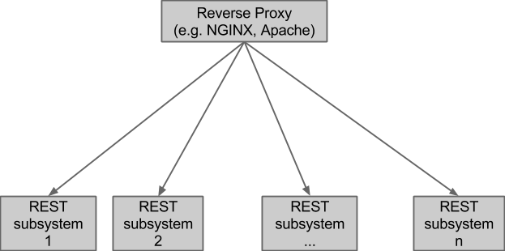
A REST subsystem is a run-time subsystem whose communication with the outside world is entirely through HTTP/REST. This means that the REST subsystems cannot see each other directly, but they can see the resources they expose. Inside a REST subsystem, any sort of implementation-specific communication between elements is possible.
At least 3 of these REST subsystems could be the standard ones that we supply that handle authentication, access control and multi-tenancy.
Physically, the system can take many forms. In a production system, it might look like this:
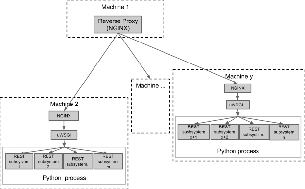
A production environment could be even more scaled-out, with each REST subsystem being allocated one or more physical or virtual machines of its own.
It is also possible to run the whole thing on a single machine, which is useful for unit and integration testing:
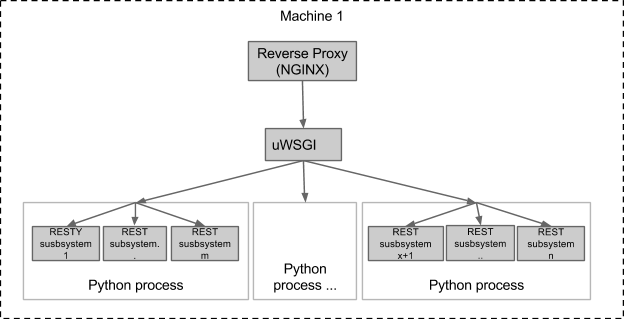
You can even run all the REST subsystems in the same python process if you want.
Finally, for development, you can run an even simpler environment on your development machine. If you are developing a single application that does not need authentication, access control or multi-tenancy, you can just run your application in a simple python process and still access it via HTTP. More interestingly, when you need to integrate other subsystems, you can run a development topology like this:
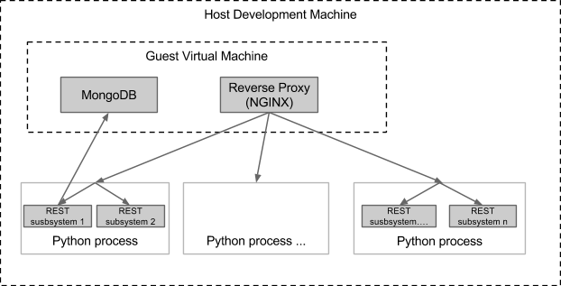
The advantage of this topology is that the subsystems run as simple python processes, so you have access to all the usual debugging and IDE options on which developers rely, but at the same time, your subsystems are still running in something resembling the ‘system environment’ in which they will ultimately be deployed.
We provide examples of Nginx and UWSGi configuration files and shell scripts for all these topologies.
Frameworks are optional
The REST subsystems in the diagrams above could actually be implemented in any programming language with any database, using any frameworks and libraries – use of our server-side implementation framework is not required – it’s just supposed to be helpful. If you don’t use our server-side implementation framework, there are a few simple protocols and resources you will need to understand in order to live behind a reverse proxy and use the standard REST subsystems that support authentication, access control and multi-tenancy. Of course, the standard subsystems take the form of REST resources – a couple of well-known, bookmarkable resources, and the knowledge of how to navigate to the others.
Tying the system together
When a system is deployed as a set of subsystems behind a reverse proxy, as described above, it allows you to manage the system in some interesting ways. For example, you can do rolling upgrades and A/B testing.
When we want to upgrade a particular subsystem, we like to bring up the new version in parallel with the old one. We will then adjust the routing tables of the reverse proxy to send a small portion of the traffic to the new version. Nginx in particular has in-built support for this sort of partial traffic routing – perhaps Apache does too, I don’t know. If the new version behaves well with a portion of the traffic, you can continue to move more and more traffic to it until the new version has no traffic left. If everything is going well, you can then take down the old version. If things go less well, all traffic can be instantaneously switched back to the old version. [In the interests of full disclosure – we have done this in lab experiments, but we have not yet had the opportunity to do it on a system that is supporting live load.]
One approach to A/B testing is a variant of this upgrade approach. A trial version of a subsystem is deployed alongside the production version, and traffic is split between them. As soon as sufficient data has been gathered to answer the A/B hypothesis, the traffic is all switched back to the production version and the trial version is taken down.
Relationship to PaaS offerings like CloudFoundry, Heroku, OpenShift
PaaS offerings typically make it easy to install a single application on a single virtual machine or virtual machine partition. They do this by making a set of standard middleware choices for you and then automating the build/deploy/configure steps. This is useful, although it’s not really that hard to learn how to do it yourself. You can use PaaSes in conjunction with our current framework to deploy individual subsystems – we have used CloudFoundry, Heroku and OpenShift in the past – or you can deploy the individual subsystems yourself on an IaaS (e.g. SoftLayer, RackSpace or Amazon Web Services), which is our current preference. You don’t have to deploy all the subsystems of a system on the same cloud – a single system can span multiple clouds. The current-generation PaaSes have no concept of the sort of total system we have described above, so there is no conflict between the PaaSes and our technology. Some PaaSes introduce their own capability for account/user management – we treat those like any external user/account system.
Our experience with PaaSes was that moving between the local development environment and the deployed environment often turned up problems, and we ended up debugging on the deployed system. After we moved to the development configuration described above we had many fewer of these issues, and since our system also has the ability to do rolling upgrades, the consequences of having to debug on the deployed system are less.
REST versus SOA
The choice of REST and Linked-Data rather than SOA as our fundamental architectural pattern is important, so we feel obliged to say something about it, but we will try to be brief.
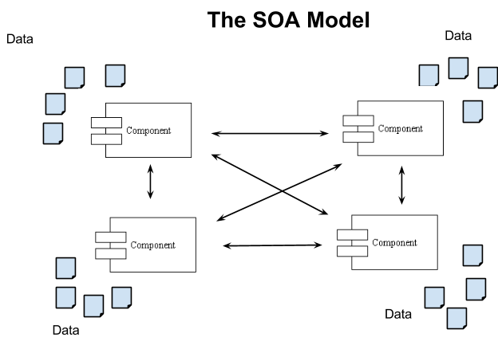
In SOA, the central concept is the service, and services talk to each other via their APIs. APIs are made up of units that are variously called operations, methods, procedures, functions etc. Data is important, but is always kept ‘behind’ the service that manages it. When you talk to a service, you often make reference to a data entity, usually by including its identifier in a ‘parameter’ to an operation. (This is an example of a common case where clients will compose URLs from strings in the rpc-over-http model.) Words like service, operation and parameter are characteristic of the SOA model. RPC- over-HTTP is a streamlined implementation of the basic communication mechanism that supports SOA.
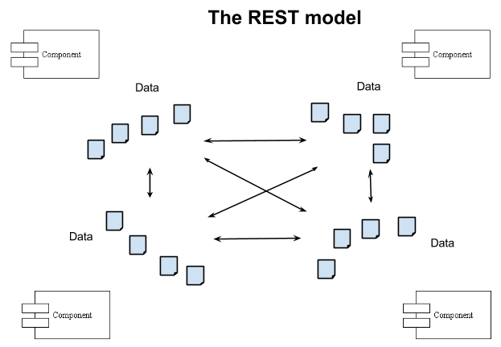
In REST, the central concept is the data, in the form of a ‘resource’, and you always talk directly to resources. There is no concept of service, method or parameter, except for the standard HTTP methods. In the REST model, it is uncommon to construct a URL from other pieces of information – URLs are usually entirely opaque to clients. Normally you either know a URL because it’s a well-known one that you bookmarked, or because you found it in the representation of another resource whose URL you already knew – REST is a hypermedia model. Of course, when you talk to a resource, you are always in reality talking to some piece of implementation software – even if it’s only the file system – but the software is totally invisible to you and you can only the resources. It is important to reason about the units of software for purposes of system deployment, but the units of software (the ‘services’) do not figure in the programming model.
In summary, SOA and REST are inverses of each other (read that again – it’s important). REST is not a variant of SOA, although the ‘remote procedure call over HTTP’ model that many people confuse with REST is a variant of SOA. In the remainder of this document, we will assume a ‘true’ REST model.
More on systems of subsystems
There are many, many technologies available to you for implementing a single application, and if that were the only goal, our frameworks would be just one of a large group clamoring for attention. There is much less technology available for developing integrated systems composed of many subsystems (or applications) and that is the primary goal of our software.
The basic idea behind the use of Linked Data for integration is simple and obvious. We have seen that the regular HTML web is an extraordinary integrator. By embedding links – usually HTML anchor tags – inside pages, HTML enables the user of a browser to navigate to other pages without modifying those pages or constraining in any way how those pages are implemented – they don’t even have to be HTML. This integration does not require any sort of coordination or contract between the owners of the referenced pages and the owner of the page that references them, except perhaps to demand that the URLs used to reference the pages should not change or disappear. This extraordinarily simple idea – which actually pre-dates the world-wide web by several decades (e.g. Vannevar Bush, 1945 and Ted Nelson, 1960) – has allowed the HTML world-wide web to freely integrate commerce sites, blogs and micro-blogs, music sites, video sites, social networking sites, government sites, religious sites, scientific sites, encyclopedia sites, news sites and so on. Navigation of this web within a modern browser is easy and seamless. [One of my pet peeves is software like iTunes that does not fit seamlessly in this web. Mobile apps are disappointing in this regard too.] The basic idea of integration using Linked Data is that if you just substitute a data model (RDF) for HTML and otherwise ‘make like the world-wide web’, then applications can achieve the same sort of easy and limitless integration that we see in the HTML web. We believe that this is basically true, but there are some things we need to learn and some problems we need to overcome in order for it to work. One of the things we need to learn is to implement client applications that ‘make like a browser’ and server applications that expose everything as linked resources. Another thing we have to manage is authentication and access control, because application data, unlike large parts of the public internet, are usually protected.
Our framework comes with 3 ‘standard’ REST subsystems that provide support for authentication, access control and multi-tenancy respectively. They are interesting because
- They provide capability that is shared across the whole system
- They are subsystems implemented with the frameworks themselves.
If you deployed a system that used the standard subsystems, its logical topology would look like this:
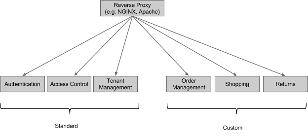
If you were implementing a single shopping site, you might not care about the multi-tenancy subsystem – that one would be most useful if you were trying to implement a competitor to Shopify, BigCommerce or Volution.
You might reasonable ask whether we are really integrating with the world-wide web, or whether we are just creating larger islands within it. I believe the former is true – as evidence, here is another interesting topology that I believe would work fine, even though I have not tested it
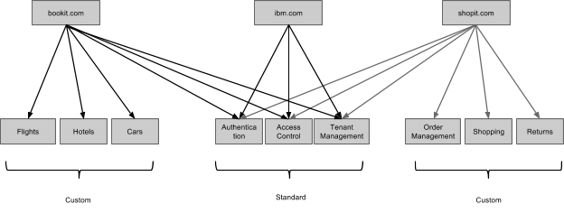
In other words, subsystems can be shared across systems, and IBM, or someone else, could host standard subsystems for inclusion in other systems. (I should verify that this works.)
Before we go on to examine the standard subsystems in more detail, lets look at another example.
What would Jazz have looked like if it had been implemented this way?
Many of the ideas in our software came from our attempts to address problems we encountered while working on the IBM Jazz platform. The IBM Jazz framework provides standard function that is shared across the Jazz applications – i.e. Rational Team Concert (RTC), Rational Quality Manager (RQM), Rational Requirements Composer (RRC), Rational Data Manager (RDM) and others. Jazz provides support for concepts like users, projects, dashboards and so on to these applications. However, Jazz applications cannot easily share each other’s data when they are integrated in a system. This means that RTC, RQM and RRC all define their own projects, and we have had to invent another layer that tries to link together the different projects implemented in each of these applications. Milestones, which are fundamental to how developers work in RTC, are not visible to testers working in RQM. If Jazz and the Jazz products had been implemented with our framework, we believe these problems would have been avoided. Instead of the project capability being duplicated in RTC, RQM and RRC, it would have been a shared REST subsystem accessed by all 3 when running together in a system. So instead of this:
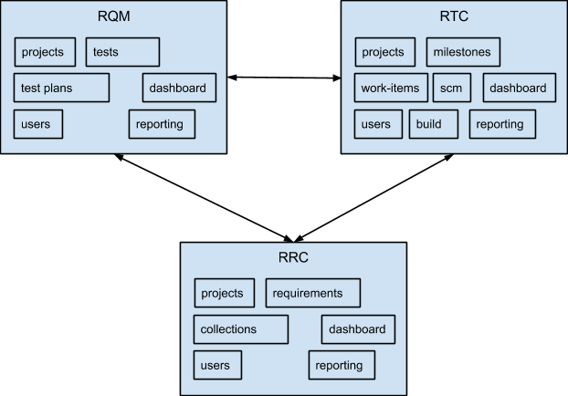
We would have had this:
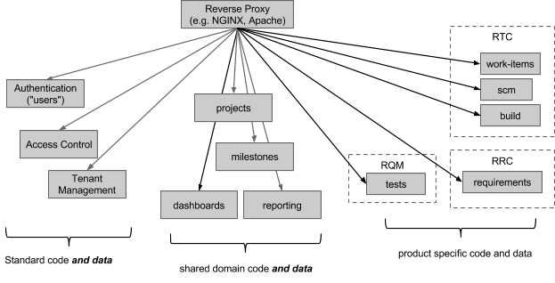
If we had done this, users of RTC, RQM and RRC would have been able to share the same project definitions, and RQM users could have seen and used the milestones defined by the programmers using RTC.
In this model, a traditional product is just one of the possible subsets of the complete system. This is only practical if you can achieve a high level of independence between the parts, the way the world-wide web achieves independence between pages the browser traverses between.
The Jazz products are trying to make progress towards an architectural pattern that has characteristics in common with this one, but it’s difficult to change existing products.
Authentication
The authentication subsystem implements login and logout for the whole system. Our current implementation allows systems to create their own accounts, which are stored in a database. Passwords are stored salted and hashed to meet normal security standards. A fuller implementation of the authentication subsystem would include much more including:
- integration with enterprise LDAP systems
- ability to login via Facebook, Google and other external sites
- for internally-managed accounts, confirmation of new accounts through email and the ability to reset passwords through email
- integration with newer mechanisms like OAuth2 and OpenID
The important thing about the authentication subsystem is that it does all this for the whole system, so the other subsystems in the system do almost nothing for authentication. This is true even if the other subsystems are written using diverse languages and frameworks other than our own. This means that future development effort to address the above list only has to be done once.
Our authentication subsystem is not designed to replace industry-standard single sign-on systems. All the authentication system does is centralize the authentication handling for the system in one place, so the other subsystems can just implement business-logic and not have to worry about authentication. This only works because all the subsystems are running behind the reverse proxy so their resources are part of the same internet domain (or set of domains in a multi-tenant system). From an authentication point of view, this allows the whole system to run like one big monolithic application, even though it is implemented and deployed as multiple smaller subsystems. Industry-standard single sign-on mechanisms are still needed to integrate the system with others, but only the authentication subsystem has to deal with the technology to do that.
Like every Linked Data application, the authentication subsystem itself is invisible – only the resources that it manages can be seen. Here are the important ones.
/account/login
/account/login is a well-known resource in the sense that its URL can be bookmarked. Our server implementation frameworks know this bookmark, and how and when to use it, so subsystems built with the implementation frameworks don’t need to know it or use it. Server subsystems that are built without our framework need to know this URL – they will delegate to it in challenging users to login.
/account/login is actually a family of resources – there is one in each tenant’s domain in a multi-tenant system.
If a REST subsystem wishes to challenge a user to login in response to a request that asked for HTML format, it returns a 401 response with the following body:
1 2 3 4 5 6 7 8 | |
The browser will execute this script which will land the user in the login UI.
If the original request asked for JSON, rather than HTML, this body will be returned instead:
1
| |
The programmatic client that sent the original request is expected to act appropriately, possibly by taking the user to the login resource’s HTML representation, but perhaps instead by doing a programmatic login.
If the REST subsystem is implemented using our server framework, all this behavior is handled automatically – the subsystem implementations just return the HTTP status code 401 (or 403) and the framework does the rest.
Here is the representation of /account/login in simple JSON format:
1 2 3 4 5 6 7 8 | |
As you can see, the representation includes a link to the ‘registration’ resource which allows you to create a new account either through the UI (if you ask for its HTML representation) or programmatically.
Entering http://
The way you login is by POSTing a data structure containing the account_id and password to this same /account/login resource. [If you are a user in the UI, the UI code will do this for you.] Of course, this POST should be done via https.
If a login is successful, a session token is returned to the browser (as a cookie set in the header) or to the programmatic client (in the body). In the case of the browser client, standard processing is to return the user to the place they were going before they got redirected to login. The session token is in JWT (JSON Web Token) format. Currently it is signed with a hash of a shared secret, but we will probably change that to a public/private key signature to avoid having to distribute shared secrets to subsystems. This is the format of the content portion of the JWT:
1 2 3 4 5 6 7 | |
‘User’ is the URL of the current user (the JWT spec documents a field called ISS that may be intended for this purpose – the spec is hard to interpret). ‘exp’ is the expiry time and is specified in the JWT spec. ‘disp’ is the display name to use – it comes from the nickname or given name for the user recorded in the account. ‘acc’ is the URL of the account and will only be set if the user has logged in. ‘fka’ means ‘formerly known as’ and will be set if the user was assigned a temporary URL prior to login.
If you want to write a subsystem, but you don’t want to use our implementation framework, you need to understand how to delegate to /account/login and how to recognize and verify the JWT session cookie.
As is typical with session tokens, once a session token has been passed out, it is a sensitive property until it expires. By including that session token in requests, a client can access all the resources that the user associated with that session is allowed to access for the duration of the token. This means that if a token is stolen, it can be used maliciously until it expires. Use of https throughout is one way this exposure can be mitigated somewhat, but you still have to trust the clients (e.g. browsers) that hold the tokens not to divulge them. The good news is that tokens cannot realistically be counterfeited without having access to the account subsystem’s private key (which is therefore an even hotter property).
When a server subsystem receives a request with a session cookie, its job is simply to verify the signature and the expiry time and then proceed or reject the request. If the subsystem is implemented with our server framework, this verification is done automatically without the need for subsystem implementation participation.
/account/
Individual accounts are created by POSTing to /account/new. This URL is not normally bookmarked – you can navigate to it from the /account/login resource.
Our system differentiates between users and accounts. Users exist in the real world, but they do have URLs. Accounts represent a single system’s knowledge of a particular user. Accounts have passwords, users have given names and family names. The same user can have many accounts on many systems. Currently we only allow a particular user (as identified by her URL) to have a single account per system, although we could relax that by demanding the password of the first account as part of the establishment of the second. When a resource in the system is created or updated, we record the user who did it, not the account. Similarly, access rights to resources are granted to users, not accounts. Focusing on users rather than accounts allows information to be aggregated across systems – the next level of integration – this is very important. The terminology here can be confusing because of LDAP’s tradition of using the word ‘user’ for the thing we call an ‘account’. If you doubt that LDAP users are not really users, consider that LDAP users can only have a single password and ask yourself how well that models your life. Once you realize that an LDAP user is really a user’s account on a particular system, things fall into place. Some users – not many – already have a URL to identify themselves, and we allow those users to enter their own URL. Mine is http ://martin-nally.name. (This URL is reachable.) For users who don’t already have an URL of their own, our system will assign one based on the email address given for the account.
In multi-tenant systems, we offer two options for account management. Accounts can be managed centrally for all tenants by the host, or accounts may be managed by tenant. We’re guessing that hosters like the former and tenants prefer the latter
As with all REST subsystems, the account REST subsystem can run anywhere – we have run the account REST subsystem for a system without issues on one cloud while the domain logic for the same system runs on a whole different cloud.
Access Control
There are lots of simple designs for access control that would work to secure resources through the standard HTTP GET, PUT, PATCH, POST, DELETE interface. Slightly harder, but in our opinion necessary, is designing an access control mechanism that can be pushed down into database queries, so that database queries return only the information that the user has the right to see. In this document, we have not yet examined in detail the implementation of containers (collections) that we POST to – we’ll get to that – so for the moment you can take my word for it that it depends heavily on query, and an approach to access control that could not be pushed down into the database would be problematic.
Here is the conceptual model we implement for access control that can be pushed down into queries:
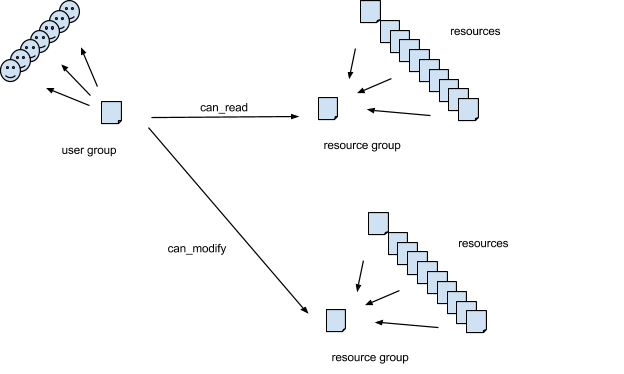
Resources are not secured individually, they are secured in groups. Each resource in the system has a property called ac_resource_group that must be set to the URL of its security group. An subsystem will commonly set the value of this property to point to one of its own resources, but this is not a requirement. A resource’s ac_resource_group property may also be set to point to itself, in which case the resource forms its own group. For many subsystems it is obvious what groups to use. For example, in RTC (Rational Team Concert), by default at least, all work-items in the same project-area (or team-area, perhaps) have the same access controls. If RTC were implemented on our framework, it might set the ac_resource_group for each work-item to reference its team- or project-area. RRC (Rational Requirements Composer) has the concept of a ‘requirement collection’ which would perhaps make a natural ac_resource_group value for requirements. Other subsystems will have different ideas about what the groups should look like. Subsystems can even use URLs of resources outside the system to define resource groups.
The access control subsystem manages resources of type User Group. A User Group lists a set of users, and specifies what rights they have to access and modify [the resources that are members of] specified resource groups.
As always, the interface to the access control subsystem is specified entirely by the resources it exposes.
/ac/n.m
Resources whose URLs are of this form are the User Groups themselves. They are used to define who can access what. They are not normally bookmarked – you would navigate to them from another resource.
User Groups are usually only accessed by the access control subsystem itself – for example through the UI provided to maintain them (this UI has yet to be written unfortunately).
Here is a look at a User Group:
1 2 3 4 5 6 7 8 9 10 11 12 13 14 15 16 17 18 19 20 21 22 23 24 25 26 27 28 29 30 31 32 33 34 | |
User Groups are themselves resources in resource groups secured by other User Groups, so there is actually another property I have omitted above:
1
| |
Even I find this recursive use of resource groups confusing every time I come back to this topic, so I omitted it for clarity, but it is important. This is how you control who can alter particular UserGroups, thereby granting permissions to others.
The value of ac_do is an integer whose bits define what people can do. 63 is all-bits-on, which means they can do everything.
The value of ac_to defines which resource groups the User Group is giving permissions to.
/ac-permissions?<resource_group>&
These are the resources used by the subsystems of the system to decide whether an individual GET, POST, PATCH, DELETE operation may be performed. If the subsystem is implemented using our server-side framework, this is done automatically without the programmer needing to do anything. (For subsystems implemented with our framework, there is an environment variable that controls whether or not access control is to be enforced.)
The meaning of each resource in this family of resources is ‘the level of permission that the specified user has to operate on [resources of] the specified resource group’. The representation of these resources is a single integer whose bits represent the granted permissions (read, create, update, delete etc). These resources are bookmarkable and cacheable, and their URLs are usually composed by clients from a known resource_group URL and known user URL. These resources are ‘derived resources’ that contain no original information – they are calculated by database queries over the underlying UserGroups in the access control subsystem implementation. The user URL may be omitted in which case it defaults to the user associated with the current session. The resource_group URL must always be provided in the query string.
These resources are amongst the few we have whose primary usage pattern requires the client to compose a URL from fragments. The reason that we use URL-composition to access these resources is that it is difficult to find a resource we own from which to link to them. You could even argue that this looks a bit like a SOA interface where /ac-permissions is the URL of the SOA method and <resource_group> and
/ac-resource-groups?
These are the resources used by the subsystems to push access control permissions down into database queries. If the subsystem is performing a query whose selection clause is ‘WHERE x = y’, it should augment the selection clause to be ‘WHERE x = y AND ac_resource_group IN ’, where the list of ac resource groups is found in the representation of one of these resources. If the subsystem is implemented using our server- side framework, this is done automatically without the subsystem programmer needing to do anything. (There is a server environment variable that controls whether or not access control is to be enforced.)
We do not assume relational database technology – other database technologies support selection filters too. Our current implementation is on top of MongoDB.
The meaning of each resource in this family of resources is ‘the collection of resource groups to which the given user has at least read access’. The representation of these resources is a simple array of URLs. These resources are bookmarkable and cacheable, and their URLs are usually composed by clients from a known user URL. The user URL may be omitted in which case it defaults to the user associated with the current session. These resources are ‘derived resources’ that are calculated by database queries over the UserGroups in the access control subsystem implementation.
/ac?<resource_group>&
Although they are implemented, I don’t think we have a clear use for these resources currently.
The meaning of each resource in this family of resources is ‘the collection of User Groups that reference the given resource_group and user’. These resources are bookmarkable, and their URLs are expected to be composed by clients from a known resource_group URL and user URL. These resources are calculated by queries in the implementation. The user URL may be omitted, in which case the user from the current session is used. The resource_group may also be omitted in which case all resource specs that reference the user are returned – this is the equivalent of asking what user groups the user is in.
Access Control application availability
When access control is enabled, subsystems have to access the access control subsystem’s resources to process requests. This means that if the access control subsystem is down or unreachable, the whole system stops. It would be interesting to explore how some of the Netflix OSS Hystrix techniques – suitably ported to Python – could be used to improve this situation.
Multi-tenancy
In our definition, multi-tenancy refers to the ability of a single installation of a system of subsystems to manage parallel independent webs of resources, each web belonging to a different HTTP domain. For example, the same installation of shopping-site software might simultaneously support multiple online stores each with its own domain name (e.g. ‘gardendecorations.com’ and ‘webvitamins.com’) and completely different inventory and orders.
Our model for multi-tenancy is analogous to the popular board game ‘Monopoly’. If you are the hoster, you own the entire board and the bank. Atlantic City, New Jersey, is credited with being the original Monopoly variation, so lets assume the hoster’s domain is http://acnj.com. Players buy properties on the hoster’s board. In our current code, properties are called ‘sites’. In a slight departure from the Monopoly model, customers in our game get to name their own sites. Each site corresponds to an internet domain name. Let’s assume I create the site ‘boardwalk’ at http://acnj.com. Our framework will allocate http://boardwalk.acnj.com to the new site, although we assume it is likely that the customer will also buy http://boardwalk.com from an internet registrar and use that domain in preference. [Bringing your own domain name like this isn’t implemented yet in our code – it is on our to-do list.] Once they own a site, customers can put improvements on it. In the board game as I remember it, there are only two types of improvement you can add – houses and hotels. In our hosting game, the sorts of improvements you can add are more varied, depending on the software that a hoster has installed. Examples might be:
- online stores
- blogs
- online banks
- online travel agencies
- … anything else you have written subsystems to support
These different ‘types’ of improvements are called capabilities in our framework. A capability is really just an installed subsystem that has been flagged as representing tenant-meaningful function. Capabilities are installed centrally on the board at the bank and are visible to all sites. As in the board game, you can put multiple improvements of the same type on the same site – whether you add a second online store to an existing site or put it on a new site is really a branding issue for the customer. For example, some retailers like to keep their discount store under the same brand (e.g. http://rei.com and http://rei.com/outlet) while others prefer to keep separate store brands for different price-points (e.g. Macy’s and Bloomingdale’s).
When a subsystem is running in our framework, it will get both a tenant id and a capability id with each HTTP request. In the current code, if the incoming URL is http://boardwalk.acnj.com/shop/2.3, then the capability id is ‘shop’ and the tenant id is ‘boardwalk’. Our default implementation will create a separate MongoDB collection for each tenant/capability pair. If there are multiple shops on the same site, they will share a single MongoDB collection for storage – the different shops are kept apart by linkages in the resources. Everything to do with a shop – it’s orders, catalogs, products, etc. will go into the same ‘shop’ collection (unless they are implemented by a different capability). Different sites never share storage collections, so it is unlikely that we would ever accidentally give one tenant’s data to another. It is possible for two different types of improvement on the same site to share a collection, and even to share resources, although this is not the default behavior.
The multi-tenancy subsystem allows customers to create and manage their sites and to add improvements. The management of a particular improvement – for example a store, its products, orders, inventory etc. – is done through the capability that created it, not by the multi-tenancy app.
PART II – CloudApps4.me an online demo on SoftLayer
In this section we will take you through a brief demo of an example system we are in the process of writing. The system is currently deployed on a single virtual machine on SoftLayer. It’s URL is http://cloudapps4.me. It runs – at least to some degree – you can try it. CloudApps4.me is a multi-tenant hoster. Currently CloudApps4.me has a single customer whose site is called ‘CloudSupplements’ - an online store of vitamins and health products. Because our system is still under construction, we wrote scripts to create most of the data for cloudsupplements – you cannot create it all through the UI yet. However, the scripts that created the data use the same public HTTP REST API that the UI will use – we did not exploit any sort of ‘backdoor’ to create the data. You can go directly to http://clou dsupplements.cloudapps4.me and see the store. You can browse the catalog and fill your cart. You cannot yet check out – don’t wait at your mailbox for the mail carrier to arrive. The shopping UI is built using the popular KnockoutJS data-binding framework, which we like quite a bit, but we do not prescribe an approach to UI construction and you can use what you like in your own subsystems.
If you go to http://cloudapps4.me you will initially see no existing sites. If you log in as admin/admin, the cloudsupplements site will appear. You can explore the cloudsupplements site and you can link from there to the store at http://cloudsupplements.cloudapps 4.me. You can also create new sites and you can add new improvements (instances of capabilities) to them. Your choice of capabilities is currently limited to shop and blog so your improvements need to be of those types. You can create a new shop, but – as I said above – there is not enough implemented yet to let you define your catalog, prices, taxes etc. through the UI. Blogging is even more embryonic.
You can also create a new account (register) and log in. You use the same account to create new sites that you use to shop at an existing site – accounts are not specific to a particular capability.
PART III – Technical and hands-on
What is this RDF thing?
Before you can use the server-implementation part of our framework, you will need some understanding of the data structures in the messages that will go in and out of an application built on it. These structures are based on RDF. I will assume in this section that you are not already an expert in RDF.
If you are like most people, when you want to find out about something you don’t already know, you Google it. In the case of RDF this may not be a good idea, because you will be led to a lot of confusing information that makes RDF seem much more strange and complex than it really is. This description will try to demystify RDF by describing it from the starting point of someone who already knows JSON and likes its simplicity.
One important thing to understand about RDF is that it is a data model, not a data format, so RDF data can be represented in XML, JSON and other formats. From a programmer’s perspective, the interesting question might be how RDF data is represented in programming-language data structures (objects, arrays, literals). Since there is a very direct correspondence between JSON and the data structures of popular programming languages like Python, Ruby and Javascript, understanding a JSON format for RDF data gets you a long way towards answering this question.
RDF for JSON programmers – lesson 1
Let’s take the example of an on-line product review at Amazon.com. Since Amazon URLs are long and complicated and difficult to read (they should work on that), I’m going to substitute them as follows:
If you asked a programmer familiar with JSON to write down what http://az.com /review_1 would look like in JSON, they might write something like this:
1 2 3 4 5 6 7 8 9 10 11 | |
[I am assuming that our programmer already understands and is following the REST model. A programmer following the rpc-over-http model would probably have provided database primary keys for reviewer and product, and would have expected clients to compose URLs by tacking the database primary key onto some URL string prefix, likely with a ‘?’ in between and maybe an ‘=’ for good luck.]
It is hard to quarrel with the simplicity and intuitiveness of this JSON, and we will try not to spoil it as we convert it to RDF.
If we put aside the notation and look at the underlying data model for the above information, it might look like this:
| Property | Value |
|---|---|
| found_helpful | 180 |
| found_helpful_or_not | 192 |
| stars | 4 |
| title | Good little Wifi Adapter |
| reviewer | http://az.com/reviewer_1 |
| reviewOf | http://az.com/product_1 |
| verified_purchase | true |
| text | I purchased this to add wireless connectivity to my Raspberry Pi […] |
It is clear this is a set of property-value pairs, but it is less clear what they are the property-values of. If you asked the JSON programmer, she would probably reply that they are the values for the review whose representation this is. In other words, if you do a GET on the review http://az.com/review_1 then you can assume that the property values returned are the property values of http: //az.com/review_1. Although this assumption sounds reasonable, it actually turns out to be a problem in more complex cases even for the native JSON programmer (see the next example), so we are going to remove this assumption by making the information explicit. We do this by adding a new JSON property, as follows.
1 2 3 4 5 6 7 8 9 10 11 12 | |
Congratulations, you just (re-)invented RDF! Really, that is all there is to it – the rest is detail. People knowledgeable of RDF will quibble with some aspects of this representation, but I claim that we have already converted our simple JSON to an RDF data model. What we did looks trivial, but it’s actually quite profound. You have to realize that _subject is really not another property of the review. The data model we derive from the new JSON is not the following table as you might expect:
| Property | Value |
|---|---|
| _subject | http://az.com/review_1 |
| found_helpful | 180 |
| found_helpful_or_not | 192 |
| stars | 4 |
| title | Good little Wifi Adapter |
| reviewer | http://az.com/reviewer_1 |
| reviewOf | http://az.com/product_1 |
| verified_purchase | true |
| text | I purchased this to add wireless connectivity to my Raspberry Pi […] |
Instead, the data model is this:
| Subject | Property | Value |
|---|---|---|
| http://az.com/review_1 | found_helpful | 180 |
| “” | found_helpful_or_not | 192 |
| “” | stars | 4 |
| “” | title | Good little Wifi Adapter |
| “” | reviewer | http://az.com/reviewer_1 |
| “” | reviewOf | http://az.com/product_1 |
| “” | verified_purchase | true |
| “” | text | I purchased this to add wireless connectivity to my Raspberry Pi […] |
_subject is not specifying a new property of the review, it’s defining which review we are talking about. You might think it’s reasonable to think of the URI of a review as being one of its properties, but this view of things breaks down quickly and will get in the way of your understanding of RDF.
The key ideas that make RDF different from ordinary Javascript objects are these.
- Simple Javascript objects contain property-value pairs, while RDF adds the information about whose property-value pairs they are (the ‘subject’, in RDF terminology)
- The subject of the property-value pairs is identified by a URI
I will add a caution here. In its essence, RDF really is as simple as I described it above, but the fact that it is simple does not make it easy. It took me some time to really understand the implications of this simple model, and to unlearn the false assumptions I was carrying over from other things I knew. Everyone I have worked with on RDF has had a similar experience.
If my warning came too late and you have already done some Googling on RDF, let me relate this to what you might have seen. The three-column table above is a rendering of the standard RDF “graph of triples” - each row describes one triple. RDF calls sets of triples like these ‘graphs’, and the standard tutorial material usually emphasizes how you can match URL values in the left column with URL values in the right column to form a graph from the table. In my experience it’s often more useful to think of a set of RDF triples as a simple table than as a graph. Also, there is a W3C recommendation called JSON-LD that specifies an ‘approved’ version of what we just did with subject. Unfortunately, JSON-LD says you should use “@id” instead of “subject”, but since that choice is awkward to deal with in some programming languages (e.g. Javascript), and totally incompatible with some popular programming libraries, we don’t recommend (or implement) spec compliance on this point. JSON-LD is a very large specification with many options – what we just did above is compatible with just one important option in the spec (if you ignore the details).
[Those of you with sharp eyes for detail may have noticed a little irony in the RDF table above. In the first column I used “” to mean ditto to avoid repeating the long URL at the top of the column. However, “” could also be interpreted literally to mean the empty string, which is also a valid URL – it is the null relative URL – which happens to also be a correct URL value in this case, where the representation is the result of a GET on the longer url. ]
If you think like me, you probably are not yet convinced that you should care about RDF. I think a reasonable reaction to the above discussion might be “OK, it makes sense, and it’s not difficult to do, but really, I was doing fine without this, and I have more pressing problems to solve, so why would I care?”. Let’s try another example.
RDF for JSON programmers – lesson 2
In the example above, we had a product whose URL is http://az.com/product_1
As you might expect, at Amazon.com, each review is its own resource with its own URL that you can bookmark. Given a product, we will need to be able to find the reviews for the product, so assume that corresponding to this product there is a resource that represents its collection of reviews, whose URL is this:
1
| |
(Of course, you would find this URL inside the representation of http://az.co m/product_1 and you would not try to guess it by postpending ‘review’ to the stringified URL of the product.)
If we asked the same JSON programmer that we asked before to give us the JSON for this collection of resources, she might give us this:
1 2 3 4 5 | |
If the representation of a collection only contains the URLs of the collection’s members, it’s not very convenient for a client, because most use- cases will require the client to then fetch each member of the collection individually via HTTP GET. Even without input from us, our JSON programmer would probably be pushed by her client colleagues to enhance the representation to be something more like this:
1 2 3 4 5 6 7 8 9 10 11 12 13 14 15 16 17 18 19 20 21 22 23 24 25 26 27 | |
Notice that our programmer had to invent “_subject” (or some synonym for that concept) all by herself for this case - even if she had not seen our first RDF lesson – because she can no longer depend on the outer context to know what resources the information pertains to. This means that the programmer was already using a homemade form of RDF, but she had not formalized it and was not doing it consistently. What we have found is that there are many cases like this where a common design issue in JSON has a very natural solution when you view things from an RDF perspective. Taking advantage of the work that has been done by a community of smart people to formalize the RDF model helps architects with overall design integrity, at the cost of having to read and decode the RDF literature. Alternatively, you can build on our framework and have a lot of it done for you
Even though each entry already has a ‘_subject’, we are still relying on context to convey implicit information in this example – there is nothing in the data that tells us that these reviews are the members of the collection. Here is the table of triples that can be derived from the data as it currently appears:
| Subject | Property | Value |
|---|---|---|
| http://az.com/review_1 | found_helpful | 180 |
| “” | found_helpful_or_not | 192 |
| “” | stars | 4 |
| “” | title | Good little Wifi Adapter |
| “” | reviewer | http://az.com/reviewer_1 |
| “” | reviewOf | http://az.com/product_1 |
| “” | verified_purchase | true |
| “” | text | I purchased this to add wireless connectivity to my Raspberry Pi […] |
| http://az.com/review_2 | found_helpful | 72 |
| “” | found_helpful_or_not | 77 |
| “” | stars | 5 |
| “” | title | great little product for price! |
| “” | reviewer | http://az.com/reviewer_1 |
| “” | reviewOf | http://az.com/product_1 |
| “” | verified_purchase | true |
| “” | text | I was amazed at how tiny it is! […] |
You can see that we are simply assuming that if these reviews are mentioned in the collection’s representation, it must mean that they are members of the collection. Since we don’t like these sort of implicit assumptions, we will make it explicit. We actually have two different ways of doing this – we’ll start with the more obvious one.
1 2 3 4 5 6 7 8 9 10 11 12 13 14 15 16 17 18 19 20 21 22 23 24 25 26 27 28 29 30 31 | |
Although this added a whole new level of nesting to the JSON, in reality it just added two new triples to our table:
| Subject | Property | Value |
|---|---|---|
| http://az.com/product_1/reviews | member | http://az.com/review_1 |
| “” | member | http://az.com/review_2 |
| … | … | … |
Now we have triples that declare explicitly which resources are the members rather than relying on assumptions.
[Note that the _subject JSON property of the reviews is playing double-duty here – it is defining the subject of the property-values within the nested JSON objects for the reviews, and it is defining the values of the ‘member’ property for the outer JSON object that represents the collection.]
In this example, we forced the programmer to complicate her representation of the collection with an extra level of nesting. However, it’s quite likely that she would have needed to do this anyway. Suppose for example, that she decides to record other information for the collection, like the time of the last update, or the number of entries – there are many plausible property values for a collection. The simplest way of adding these properties is to organize the data the way we have shown.
Hopefully I have convinced you that our conversion to the RDF data model has preserved the simplicity and intuitiveness of the JSON our programmer originally came up with and that the changes we imposed were pretty desirable ones anyway.
[In case you are wondering about the other technique for specifying the members, it amounts to providing some properties on the collection itself that together specify a rule that says ‘to find the members, look for all x such that a triple (x, “reviewOf”, “http://az.com/product_1”) is in the representation’. You can see in the data above that this gives the same result as the member triples, and you will see later why that is an interesting way to think about collection membership].
RDF is a different perspective
Here are a couple of examples that will show you that even though RDF is very simple, it can challenge your object-oriented pre-conceptions. Consider this JSON
1 2 3 4 5 6 7 8 9 10 | |
The object-oriented programmer in us sees two objects in an array. However, RDF sees only information about a single resource – http://martin- nally.name . The fact that the information in the resource representation was grouped into two different objects has no meaning for RDF – it all boils down to this table:
| Subject | Property | Value |
|---|---|---|
| http://martin-nally.name | givenName | “Martin” |
| “” | familyName | “Nally |
All those little objects don’t mean anything – they are just containers for sets of rows for the table.
Here is another example to challenge your object-oriented assumptions. Up above, we looked at the representation of the resource http://az.com/review_1 . It looked like this:
1 2 3 4 5 6 7 8 9 10 11 | |
This information corresponds to the following RDF table:
Subject | Property | Value http://az.com/review_1 | found_helpful | 180 “” | found_helpful_or_not | 192 “” | stars | 4 “” | title | Good little Wifi Adapter “” | reviewer | http://az.com/reviewer_1 “” | reviewOf | http://az.com/product_1 “” | verified_purchase | true “” | text | I purchased this to add wireless connectivity to my Raspberry Pi […]
In RDF, it would be simple and easy to change the line that is highlighted in red to this:
Subject | Property | Value http://az.com/product_1 | reviewedIn | http://az.com/review_1
All I did was reverse the direction of the triple – instead of saying “review_1 is a review of product_1”, I reversed it to say “product_1 is reviewed in review_1”. This information is still held in the representation of the review, not the product, and the information is entirely equivalent - all I did was change the way I stated it.
Although this change was trivial and inconsequential at the RDF level, it is now more complicated to put this information back into a JSON format – try it. [Hint – the representation of each review will become more complex – you will need two JSON objects instead of one to hold the information, but – surprisingly – the representation of the collection http://az.com/product_1/r eviews magically becomes simpler - we no longer have to invent membership triples. Answers are in the section entitled ‘Understanding Containers’.]
RDF also allows us to correct a conceptual problem with the data in the original example. The properties ‘found_helpful’ and ‘found_helpful_or_not’ are clearly properties of the review – they are trying to indicate how good the review is. However ‘stars’ is not really a property of the review at all – it’s trying to say how good the product is, not how good the review is. As a human who speaks English, I can use my common sense to figure this out, but if I were a machine, or if the example had been done in a language I don’t know, like Chinese, I could not. RDF gives us an easy way to correct this, by changing the table for the review to this:
| Subject | Property | Value |
|---|---|---|
| http://az.com/review_1 | found_helpful | 180 |
| “” | found_helpful_or_not | 192 |
| http://az.com/product_1 | stars | 4 |
| http://az.com/review_1 | title | Good little Wifi Adapter |
| “” | reviewer | http://az.com/reviewer_1 |
| “” | reviewOf | http://az.com/product_1 |
| “” | verified_purchase | true |
| “” | text | I purchased this to add wireless connectivity to my Raspberry Pi […] |
This would convert back to JSON like this:
1 2 3 4 5 6 7 8 9 10 11 12 13 | |
I think it’s unlikely I would have thought of doing this if I had just thought about it from a JSON point of view, but when I looked at it from an RDF point of view, it was pretty obvious what the right fix was.
Another JSON format for RDF
When we introduced the ‘_subject’ JSON property above, I emphasized that it is not really a property in the underlying data model. There is an alternative approach to organizing the JSON that makes this observation even clearer, and which provides an alternative JSON structure for RDF that is superior for some use-cases, but not all. We’ll call this alternative organization RDF/JSON after the W3C note that specifies a version of the idea – we support an extended version of that spec. As a reminder, here is our original starting JSON.
1 2 3 4 5 6 7 8 9 10 | |
With [our more liberal version of[1]] RDF/JSON, instead of introducing ‘_subject’, you do this:
1 2 3 4 5 6 7 8 9 10 11 12 | |
The JSON ‘names’ at the outer level are not property names, they are the URLs of the subjects of the property/value pairs in the inner objects.
With RDF/JSON, you do not nest additional JSON objects the way we saw before with the JSON-LD-inspired format. If you take our container example from above, it could look like the following in RDF/JSON. [Note this differs in some details from what we do in our framework – we’ll show you what we really do later.]
1 2 3 4 5 6 7 8 9 10 11 12 13 14 15 16 17 18 19 20 21 22 23 24 25 26 27 28 | |
From a programmer’s perspective, sometimes the [in-memory equivalent of the] RDF/JSON format is more convenient and sometimes the [in-memory equivalent of the] JSON-LD format is more convenient – the client libraries allow you to flip between them without going back to the server. There are a number of technical reasons – too low-level and detailed to discuss here – why RDF/JSON actually works better than JSON-LD as a format to exchange between clients and servers, and this is the format our frameworks and libraries mostly use. This is largely transparent to the client programmer.
Philosophical note
When I started working professionally, hierarchical databases were the most common database technology. Hierarchical databases gave a very intuitive organization of the database that is reminiscent of JSON – it was very easy to work with for many programming tasks. The problem with a hierarchical data organization is that whatever hierarchical organization you pick, it favors some uses of the data – hopefully the primary ones – and makes all the others hard. The arrival of relational databases taught us how to break the data down into a much flatter structure (tuples) that could support many different access patterns equally, although it actually required slightly more work than hierarchical model for the primary ones. I think of RDF as doing something similar for JSON – it provides a flat structure that can be composed in multiple ways into JSON objects to support different access patterns.
The Client Libraires
ROCA and SPAs
A popular way of writing web applications today is to write what is called a “Single-Page Application” or SPA. The way an SPA works is that a GET on an initial resource on the server will load an HTML program that presents the UI of the resource. This UI program will subsequently load other resources from the server asking for a data-oriented format – usually JSON – so no new HTML will be loaded. As a result, the UI is often more responsive, since there is no need to load new HTML for each resource. SPAs are also often easier to write, because they provide an easy way of preserving the state of the user interaction across resources. The use of web technologies to develop mobile applications has given a fillip to SPA designs, since mobile apps are SPAs almost by definition.
There is a common perception that SPAs necessarily violate the principles of the resource-oriented architecture that underlies the classic view of the world-wide web – for example, see ROCA. We are big fans of the ROCA principles (which are a sort of clarification of the core REST architecture of the web) and agree that it is true that most SPAs have the unfortunate characteristic of violating them in various ways, but we do not think it is necessarily so – you just have to learn to write SPAs so that they conform to the rules. Our client libraries help implement SPAs that conform. Here is how we think a ROCA-compliant SPA should work, along with a description of how our client libraries facilitate this. First the ROCA rules themselves.
- Our definition of a SPA is that is does a single HTML document load (this concept is defined in the specifications that govern how browsers work) but displays multiple web resources to the user. “Single Document Application” would have been a more accurate term for SPA, but SPA has become an industry term..
- Each resource that is displayed by the SPA is a true resource on the server that has an HTML representation and one or more data-oriented representations (usually JSON) and can be accessed by any tool (e.g. a browser, CURL, a web bot, a search engine crawler etc.).
- The SPA will never display a URL in the address bar that is not the URL of a true server resource as described above.
- Whenever the focus of the user interface moves to a particular resource, the SPA will change the URL in the web browser address bar to show the URL of that resource. Each time the address bar changes, the end user’s perception is that there has been a page change, even though there has not been a new HTML document load and we are inside the same SPA. The information visible in the user interface may include information from ‘secondary’ resources that are not the ‘primary’ resource whose URL is in the address bar.
- Whenever the user uses the reload button of the browser, or if she copies the URL of the resource from the address bar into a different browser window, the same SPA must load (as part of the HTML document load) and the SPA must position the user interface on the resource whose URL was given. This means that the SPA must not have a preconceived notion of what the ‘starting’ URL is.
- The browser back, forward and history buttons must work exactly as the user would expect, given the sequence of URLs that have been displayed in the address bar.
As I already said, many people assume that it is impossible to implement an SPA with these characteristics, but in fact it is quite simple once you see how. The key design principle that makes it possible is the following:
In the HTML representation of each resource, the data of the resource and the implementation of the SPA must both be present, but they must be kept separate
The reason the HTML representation must include the data of the resource as well as the implementation of the SPA (or a reference to it) is that the HTML representation of the resource must be readable by clients other than the browser. The most important of these from a commercial perspective is usually the search engine crawlers, but there are many others. A common mistake when implementing SPAs is to have an HTML representation of the resource that only includes the SPA implementation, and assume that the SPA will then turn around and load the appropriate data – this approach breaks all clients except the browser.
The reason you must keep the data of the resource separate from SPA implementation is that the same SPA code must be able to display any of the resources it is responsible for as the initial resource displayed to the user (for reload, and typing URLs into browsers). A common mistake in implementing SPAs is to assume that there is a privileged ‘initial’ resource whose HTML representation will load the SPA and to then intermingle the SPA implementation with the data of this resource.
is HTML a programming language or a declarative markup language?
People have debated for a long time whether HTML is a programming language or a declarative markup language (You can Google ‘is HTML a programming language’). In our opinion it is quite obviously both. In the very early days of the web, HTML was used exclusively as a text markup language for exposing documents. As the web evolved to allow commerce and other uses, programming constructs were added to HTML. You can easily recognize the programming constructs, because their use requires the understanding of an underlying processing model. Body, div, span, paragraph and anchor tags (but not all their attributes) can be explained without reference to any sort of processing model. In contrast, tags like form, and attributes like onclick can only be explained with reference to an underlying processing model. In the representations of our resources, we only make use of the data markup parts of HTML, and we never put information in our HTML representation that is not also present in the other representation formats like JSON, Turtle and so on. By contrast, we have HTML resorces that are part of the implementation of the SPA that make extensive use of the programming constructs of HTML, but contain no resource data. In other words, we use HTML as both a document markup language and a UI programming language, but never both at the same time. The more conventional – but in our view less satisfactory – approach is to mix these together.
Example HTML representation
If the description above seems a bit philosophical, an example will probably make it clear. Here is the HTML representation of one of the resources from one of our sample applications:
1 2 3 4 5 6 7 8 9 10 11 12 13 14 15 16 17 18 19 20 21 22 23 24 25 26 27 | |
The first thing you will notice is that there is no visible ‘UI programming’ in this representation – all you see are div, span and a elements that contain the data properties of the resource (a ‘Category’ resource in this case). The format we are using here is RDFa, which we like a lot, but you could use other things, like the conventions at schema.org (although our current libraries won’t help you read those in your SPA). This representation is attractive for its simplicity, but in practice it is probably a bit too simple. A search engine crawler could get some useful information from this representation, but probably not as much as you would like if you are thinking about search engine optimization (SEO). A more evolved representation (our server framework – described later – has a flag you can set to generate more complex HTML) would have more information for SEO, but it still would not include the SPA implementation.
As you can see, the SPA implementation is included by reference using the following tag:
1
| |
The entire implementation of the SPA is in /setupshop/application.js, which happens to be on the same server as the resource itself in this case, but could actually be anywhere on the web.
You might imagine from this that the implementation of our SPA is entirely in Javascript code. We implement it this way, but that has at least two disadvantages:
- Developers are used to implementing UI in HTML files
- UI implemented in HTML files is easier for 3rd-parties to inspect and learn from
Because of this, our Javascript really just does a bit of housekeeping (explained below) and then loads another HTML resource which contains the real SPA implementation without triggering another HTML document load. That HTML resource is not specific to any particular resource on our system, can be anywhere on the web, and can load further javascript. (The implementation HTML is, of course, a web resource itself but it is not a resource whose URL will ever be visible to an end-user.) You can inspect the SPA implementation HTML using the browser debug tools.
Once you have understood how this separation enables ROCA-compliant SPAs, you can probably figure out how to implement the rest yourself, but our client libraries contain some functions to make this easier.
When an SPA causes the UI to navigate to the initial resource (the one the user loaded) or navigates between resources, it needs to do it with some care to make sure the ROCA rules will be satisfied. There are really only 3 situations in which an SPA navigates to a resource:
- A user clicks on an anchor tag that was created by the SPA in the first place
- A user uses one of the browser history navigation capabilities, like the forward and back buttons
- Javascript that is part of the SPA implementation decides to move to a new resource. This includes the case when the newly-loaded SPA is deciding what the initial resource to display is.
The client libraries include a standard ‘Dispatcher’ class that applications can use to unify these 3 cases and provide standard handling of history.
Here is a list of some of the functions of the client libraries:
- Provide a dispatcher function that helps SPAs integrate with the browser history and navigation mechanisms in ways that support the ROCA principles.
- Read HTML representations that contain RDFa (potentially in the future schema.org) information and convert it into Javascript objects that are useful for programming.
- Convert easily between different Javascript organizations (simple JSON, RDF/JSON)
- Calculate minimal patches to send back to the server for updates
- Calculate and display version history differences
- Provide methods for loading SPA implementations in external HTML files without triggering a browser HTML document load
- Provide simple methods for issuing GET, PATCH, POST and DELETE requests with RDF payload
All of this takes about 1200 lines of Javascript currently.
The Server Famework
The following diagram attempts to explain the overall structure of the framework
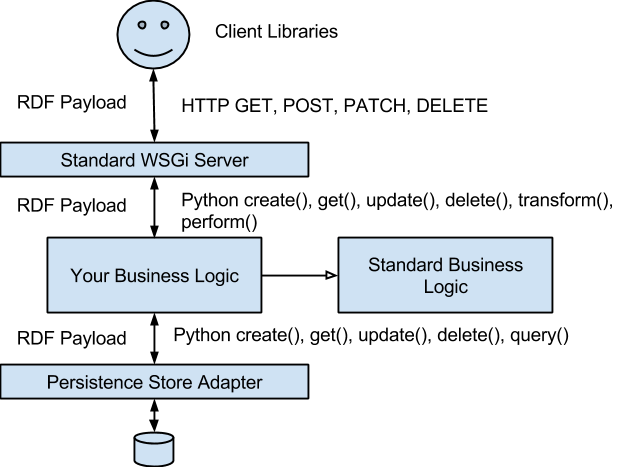
Standard WSGi Server
The ‘Standard WSGi Server’ code of the framework has the following functions:
- Accept requests from users. Any request body is expected to be in any one of many RDF formats, including RDF/JSON and ‘simple JSON’. (If you use our client library, it will almost always use the RDF/JSON format)
- Translate the request body to a set of Python objects – dictionaries, arrays and literal values. The organization of these Python objects matches the organization of the RDF/JSON serialization format, regardless of the original serialization format.
- Call the appropriate Business Logic Layer function – create(), get(), update(), delete(), transform() and action(). Create, get, update and delete should be self-explanatory. transform is a form of POST that does not create a new thing, and is ‘safe’ (no side-effects) in the technical sense of ‘safe’ as described in the HTTP spec. Transform takes a resource representation on input and produces another on output. Query processors are an example of transforms. A fahrenheit to centigrade converter would be another. We currently model login as a transform. Action is a POST with side-effects. Logout is modelled as an action.
- Return a result. The business logic layer will return a status code, a set of RDF/JSON-structured python objects and potentially headers. The standard server will convert those python objects into the representation that was requested by the client. This includes HTML – the only HTML that ever comes out the server is RDFa HTML calculated mechanically by the standard server from RDF/JSON-structured python objects. [Errors are not in RDF format – they are an array of pairs].
The standard WSGi server is not big or complex – it stands at around 450 lines of Python at the moment, although a commercial-quality one with good error checking, good logging and so on would probably be a few times bigger.
Standard Business Logic
The job of the business logic layer is to implement the CRUD+transform+action methods of the application. It can do this however it likes – by calculation, by accessing other REST resources, by accessing SOA services, or by accessing persistent storage systems. The pattern where a resource on the web is backed by some persistence entity in a storage system is so pervasive – even amongst applications that do other things in addition – that we provide a default implementation that does this that your business logic can subclass. this implementation is in the Standard Business Logic Layer. Its responsibilities are the following:
- Taking a CREATE (POST) request from the WSGi server and turning it into a corresponding insert into the storage tier. The representation of the to-be-created resource is RDF
- Taking a GET request from the WSGi server and translating it into a retrieve of a single entity on the storage system. The representation of the retrieved storage entity is RDF
- Taking a DELETE request from the WSGi server and translating it into a delete of a single entity on the storage system.
- Taking a PATCH request from the WSGi server and translating it into an update of an entity on the storage system. The representation of the to-be-created resource is RDF
- Taking a transform (POST) request from the WSGi server and translating it into query on the storage system. The representation of the query resource is structured like RDF/JSON with some tweaks (see the section on query) and the result is pure RDF.
- Providing a default implementation of ‘virtual’ container resources that are calculated from queries. This includes the ability to POST to these resources as well as to GET them. It also includes augmenting the representation of other resources to point to these virtual resources. (Note to self – should this not be in a library that can be used without having to subclass?)
- Augmenting each resource with a reference to a ‘virtual’ container that lists the historic versions of the resource.
The Standard Business Logic Server is also not big – it is under 650 lines – although would be a couple of times bigger if it were refined to commercial quality.
Persistence Store Adapter
Each Persistence Store Adapter has the same CRUD+Query interface, and all inputs and outputs are RDF/JSON-organized python objects. To date we only have a MongoDB adapter. The responsibilities of the Persistence store adapter are:
- Implement CRUD+query methods
- On create, take RDF/JSON-structured python objects on input and store them in some form in the database. Make sure that URLs that point anywhere within the current system – even if it is in a different sub-system from the one doing the create – are stored in a form that will allow the domain name of the system proxy server to change without invalidating any data in the database. Changing the proxy server domain name can happen for operational reasons or because the system was cloned.
- On retrieve of a single entity, access the data store and return the resource in RDF/JSON-organized python objects. Make sure all URLs that point to other resources in the same system – even if they are on a different subsystem – use the current domain name of the system, not the one that was current when the resource was stored or updated.
- On update of a resource, modify those parts of the stored resource that are referenced by the PATCH input, which is in the form of RDF/JSON-organized python objects. The resource to be updated is specified by its URL. Make sure any triples in the resource that are not referenced by the PATCH are preserved unmodified. We do not support PUT for update (i.e. there is no update that will blow away al data not referenced in the update). See a later section for more detail on the PATCH format.
- Execute queries on the data. The query is in the form of RDF/JSON-organized Python objects with a few extensions. See a later section for details.
- Delete entities from the database. The entity to be deleted is identified by its URL.
This currently comprises about 500 lines of Python, although a commercial- quality version would probably be a couple of times that.
Using the framework
That might already be more than you wanted to know about RDF, but you now have an idea of what the data formats of messages exchanged with your REST system will look like. Lets look at how our framework supports developing subsystems that use this sort of data.
I will try to provide enough detail and examples that you can understand our framework just by reading, but you might also like to install the software yourself and follow along in a more hands-on fashion. The framework requires a back-end database for storing the data and an adapter that matches the database to the REST/RDF assumptions of the application. The only adapter we have written to date is for MongoDB (we hope others will be straightforward), so if you want to use the framework today you will have to install MongoDB. ( http://docs.mongodb.org/manual/installation/)
To develop your application, you will author two files:
- logic_tier.py
- application.js
logic_tier.py
This is a python file that implements the server application, which takes the form of a Python class. This class can get all the standard REST/RDF behavior by subclassing a class provided in our framework. The simplest file to get started looks like this:
1 2 3 | |
Because of the code it inherits, this trivial implementation already supports the full HTTP/REST protocol. You will override these behaviors to implement business logic specific to your application – validations, augmentations, side-effects and so on.
The inherited code is found in the file system in two library modules called LogicLibrary and MongoDBStorage. When these are more mature, we will no doubt supply them as Python ‘eggs’. For now they are available as git submodules at GitHub, along with a setup.py file for their pre-reqs.
There is a tutorial application at GitHub with all these details set up: http s://github.com/mpnally/tutorial.git. Unfortunately this is still a private repository and you are not authorized (contact me if you are interested).
application.js
This is a Javascript file that implements your client application, which is usually a mobile or web user interface. This file, and any others it references, can be anywhere on the web – they do not have to be on your business logic server – we have run them from Amazon S3, for example. application.js can do anything it wants, but the following example file will take advantage of the libraries we have written to support REST and RDF, and still let your application do pretty much anything it wants.
1 2 3 4 5 6 7 8 9 10 11 | |
What this code does basically is load our library first, and then load application.html which is a file you will write. If you choose to use our client libraries (which we recommend) your application.html must contain an html body, but no html, header or body tags. Other than that, you can put whatever you like in application.html - it can load and execute whatever javascript libraries it likes, and include whatever html it likes. A very reasonable thing to do is to use this ‘standard’ implementation of application.js shown above unmodified and consider application.html as being the real ‘root’ of your UI application. This is, after all, the normal way you build a web or mobile application – it all starts with your root html file. We will explain more later on this.
The sample tutorial files include a couple of other things you will need if you want to play with the software.
A setup.py file – You can execute this server file with Python to download the python dependencies of the framework. [We do our best to minimize dependencies – we hate them – but we do have a few. Currently they are: requests, webob, pycrypto, pymongo, isodate, python-dateutil, rdflib, and werkzeug. requests and webob are popular python libraries that implement functions for sending http requests and reading data from http inputs. pycrypto is a cryptography library that is only required if you are using the authentication feature. pymongo is the python client library for MongoDB. isodate and python-dateutil provide methods to help with Date formatting and parsing. rdflib allows us to support a broad range of RDF data formats without any work on the application developer’s part. werkzeug is only used in the single-application development environment, and then only to serve static files.
A shell/bat command to start the application in a python web server. This is only used for development configurations – in production this job would fall to standard web servers and application servers like Apache, Nginx, uWSGI, GUnicorn etc.
Hands-on
We will now go through a simple demo using the browser console to add and delete things.
The first thing to do is run the application in a command/shell window:
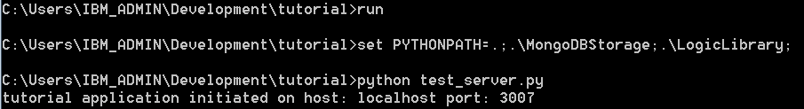
localhost:3007/x - where x is any simple path segment – is the name of a container to which you can POST to create new resources, and which you can GET to see what you already have. [Of course, you can override all this default behavior if you want by writing Python code.] If you POST to localhost:3007/x, it will create a resource whose URL is localhost:3007/x/n.m, where n is the numerical id of the server copy that handles the request (a small monotonically-increasing number) and m is the numerical id of the resource (another monotonically-increasing number). Clients do not need to know this information – for them URLs should be opaque and anyway we may choose to change these rules on the server – but you as a server developer using the framework may be interested.
At this point, you can go to a browser and enter the address “localhost:3007/tt”.
[tt is just the value of x we will use for this example – you can enter “localhost:3007/x” where x is anything you fancy. Normally you would be running behind a reverse proxy that is configured to only forward the values of x that you have chosen for your subsystems, but here we are running wide- open in development so you can enter anything.]
In the browser you will see the following:
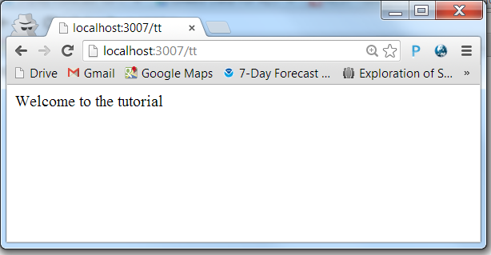
The reason you see this text is that the application.html file currently looks like this:
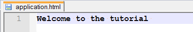
However, if you look at the source of the page, you will see this:
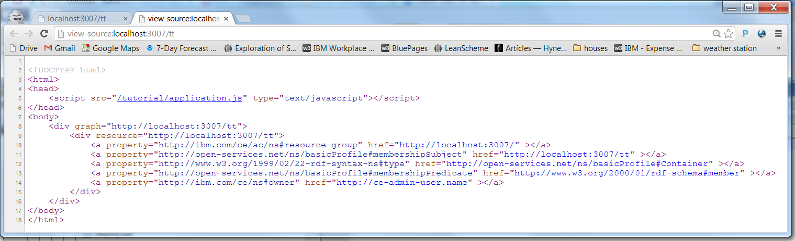
This will be surprising to many HTML programmers. The HTML contains an RDFa representation of the data resource at “localhost:3007/tt”. This HTML does not attempt to render the information in any interesting way and even if it did, we are not using it anyway – we load application.html over top of it instead. [On our to-do list is to allow server developers to embellish the RDFa representation for search-engine optimization, but not to implement UI presentation.] What the user actually sees is the content provided by application.html, which was loaded by application.js.
[If you turn off javascript in the browser, you will actually see the RDFa rendered. There is also an environment variable you can set on the server that will generate more elaborate RDFa that actually does render itself in a more readable way if Javascript is off. This will not give you a reasonable UI for your application, but it can be useful/amusing for debugging or pedagogical purposes.]
Why do we do things this way? This approach allows a very clean separation of the server, which concerns itself only with business logic and data storage, and the user interface, which is implemented in HTML and javascript and which does not even have to reside on the same server as the business logic (we have run with the UI files on Amazon S3, for example).
Customizing the UI
We can easily enhance application.html to show a (slightly) more interesting view of the resource as follows:
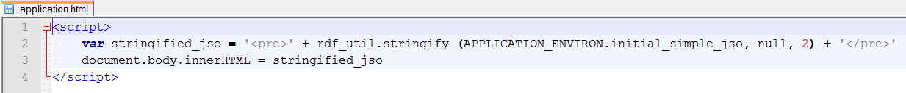
Hitting the refresh button on the browser will produce this:
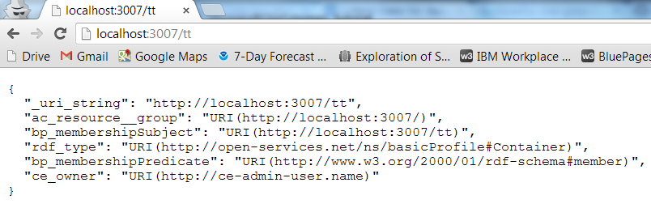
Don’t worry about the detail of the information shown here – we’ll come back to it in a longer discussion of containers. Also, be aware this is not a JSON format – it’s a JSON-like display rendering to help you understand what data is there.
When application.js ran it loaded our utility library, and then called an onload function in that library. The RDFa content in the HTML representation of the resource holds important information, but not in a format that is very friendly to Javascript programmers, so the utility onload function converts it to more usable Javascript objects in memory – similar to the ‘simple JSON’ ones described in the RDF lessons above – which it then sets as a property called initial_simple_jso in a global variable called APPLICATION_ENVIRON. It then erases the RDFa from the HTML document body and replaces it with the contents of application.html. In this example, the script in application.html finds these Javascript objects, converts them to a string, and then replaces the HTML document body once again with the result.
Exercising the server API
We can now use the browser console to create a new resource in this container, as shown in this screen-shot:
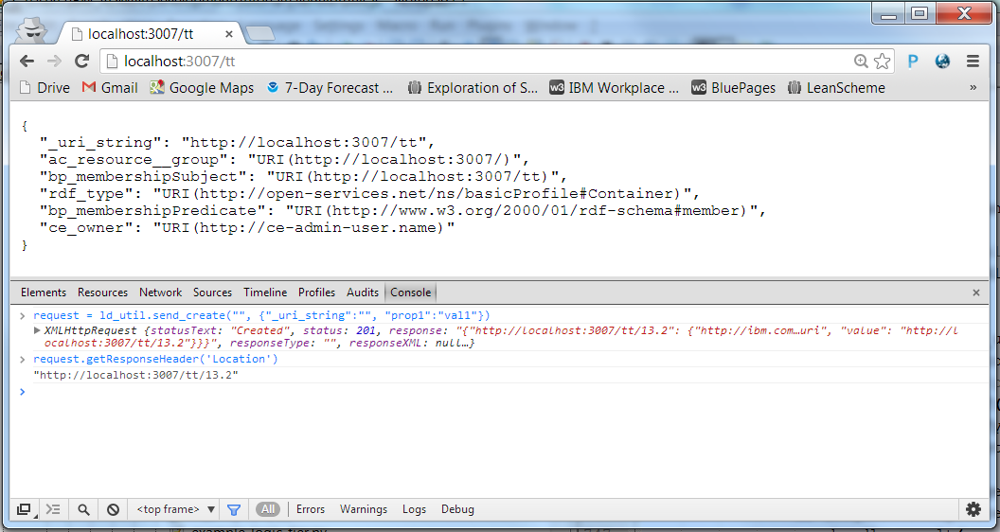
The command we used was
1
| |
ld_util.send_create is a function in the utility libraries we loaded. All it really does is set a couple of standard headers and send an HTTP POST message. The URL we send the post to is the first argument – “” - the null relative address, which is equivalent to “localhost:3007/tt”, since that is the url the browser is on. The object we send in the POST body also has its _subject set to the null relative address, but this address will be interpreted as being relative to the to-be-created resource, not the container we’re POSTing to.
You can see from the request that the server responded with ‘201 Created’ and the response body is the newly-created resource. The server also returned a ‘Location’ response header with the URL of the newly-created resource. If we click on this URL in the console window, we will see this:
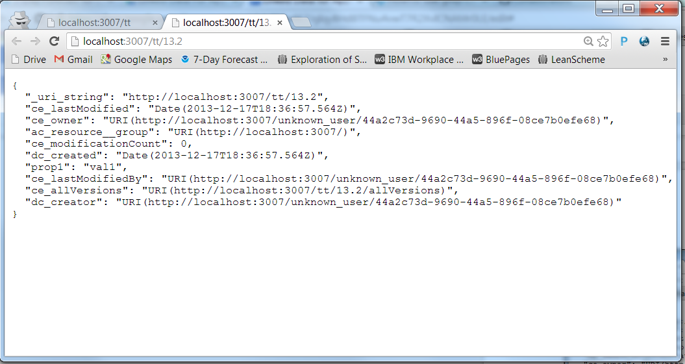
[Note that this resource is being displayed by the same application (/tutorial/application.js) that displayed the collection.] If you look at the source for /tt/13.2, it looks like this:
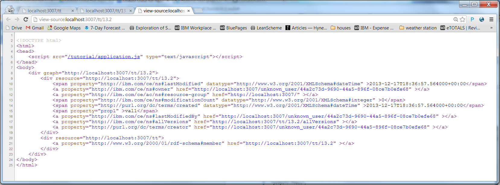
If you refresh the container (it is still in the previous tab), it now looks like this:
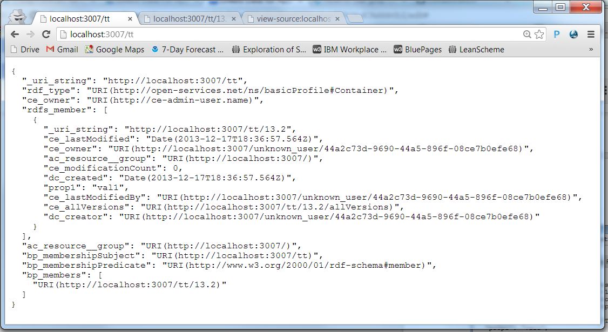
Even without worrying about the detail – explained later – you can see there is a new member in the container.
In the previous example, we POSTed to a container whose URL is ‘/tt’. This container is useful for bootstrapping, because it pre-exists without us doing anything, but it is better for applications to create their containers explicitly. Suppose I have an application that needs one container for ‘friends’ and another for ‘family’. We could use ‘/friends’ and ‘/family’ for this purpose, but doing so has at least two disadvantages:
- You will have to update the routing tables of the reverse proxy each time I add another container
- The contents of ‘/friends’ and ‘/family’ will be stored in different database collections, so I will not be able to do any queries that span both of them
Fortunately the alternative is very simple. I can execute these two statements:
1 2 3 4 5 6 7 8 9 10 11 12 13 | |
These two statements will create new resources with URLs something like ‘/tt/1.3’ and ‘/tt/1.4’ respectively. Each of these is a container, just like ‘/tt’.
I can now execute these statements:
req = ld_util.send_create(‘/tt/1.3’, {_subject : ‘’, name : ‘Jane’})
req = ld_util.send_create(‘/tt/1.3’, {_subject : ‘’, name : ‘Alice’})
req = ld_util.send_create(‘/tt/1.4’, {_subject : ‘’, name : ‘Steve’})
req = ld_util.send_create(‘/tt/1.4’, {_subject : ‘’, name : ‘Dennis’})
This will create resources ‘/tt/1.5’, ‘/tt/1.6’, ‘/tt/1.7’, and ‘/tt/1.8’. If you now do a GET on ‘/tt/1.3’ and ‘/tt/1.4’ you will see their contents as expected.
The exact meaning of the predicates bp_membershipPredicate and bp_membershipSubject will become clear in the next section.
Understanding Containers
In programming to a REST interface, the resources you POST to are very important. The most useful of these have representations you can GET to see what resources are already there. We call these resources containers[2]. Containers can be used for any important collection concept in your application – for example, the reviews for a product, the posts in a blog, or the bug-fixes in a release and so on.
Containers are not the right answer for every situation. For example, for items in a shopping cart, you might just keep the items inside the cart and update the cart when the items change[3]. By contrast, you don’t want to update a product description every time someone reviews it – that would be intrusive, create a concurrency bottleneck, and also create a security problem, because you would have to allow all potential reviewers to update the product description.
Given what an important construct container is, it might surprise you to know that they are not stored directly in the database – they are fabricated from other information that is already there. [It is common to store the meta-data for a container in the database, but not the knowledge about what it contains.] In our framework, the contents of containers are always constructed from relationships. You are almost certainly already familiar with the basic idea behind this. In relational database programming, it is common to set up secondary key relationships. For example, if I have a table of reviews and a table of products, I would probably store the primary key of a product in a column of the review table to indicate what product the review is for. If I needed to get a list of reviews for a particular product I would perform a query on the review table to find it. A huge advantage of this approach is that I can easily add and remove reviews without having to make corresponding updates to the product table or row. Our container implementation is based on the same basic idea, with some interesting twists that are made possible by the RDF model. Unlike with the relational example, client programmers do not have to think about the queries or foreign keys involved – all they need to do is POST to the container to create resources and GET the container to find the previously-POSTed resources. A DELETE on a previously-POSTed resource will delete the resource and also remove it automatically from the container, since the information that caused it to be included in the container is actually in the member resource being deleted. On the server, a GET of the container causes the correct query to be executed to calculate the container representation. On POST, the server will automatically add the ‘foreign key’‘ information to the review that links it to the product – client programmers do not have to worry about this. The server implementation framework also makes this trivial for the server programmer – a container is set up with a single library call that specifies the predicate to use and the type of resource that ‘owns’ the container. Nevertheless, it is useful for you as a server programmer to understand how this is done, because you can manipulate the membership information directly if you want to – perhaps you want to offer the ability to move a review from one product to another without losing history if it turns out the wrong product got reviewed.
It is easiest to understand containers using an example, so we will continue with the product/review example above. I’m going to do this example in RDF/JSON format, because it will make it easier to highlight a couple of points, but any other RDF representation would also do. Assume we have the following 2 resources:
This is the representation of “http://az.com/review_1”:
1 2 3 4 5 6 7 8 9 10 11 12 | |
This is the representation of “http://az.com/review_2”:
1 2 3 4 5 6 7 8 9 10 11 12 13 | |
Note that we already have all the information we need to answer the question “what are the reviews for http://az.com/product_1” - we just have to search all the reviews and see which ones have the property-value pair (“reviewOf” : “http:/ /az.com/product_1”).
The framework makes it trivial to define a resource – say http://az.com/produ ct_1/reviews - whose meaning is exactly “the reviews for http://az.com/product_1”. The framework will also embed the URL of this resource as the value of a property in http://az.com/product_1 so that clients can navigate to it without making assumptions about the form of its URL. I showed a previous version of this resource that had the following triples in it (amongst others):
1 2 3 4 5 6 7 | |
This isn’t bad, but it contains redundant information – the (“http://az.com/p roduct_1/reviews” : “member”) triples are actually redundant with the (“reviewOf” : “http://az.com/product_1”) triples in the reviews. [We call the ‘reviewOf’ triples in the reviews the ‘membership triples’ for this container]. The server can easily ensure this redundant data is always consistent, but it still adds complexity when there is redundancy in the data. To avoid this problem, what we actually put in the resource instead is this:
1 2 3 4 5 | |
The idea is that instead of adding redundant triples to specify the container membership, we provide the information that allows you to find the ones that already do the job. It is not just that we don’t want redundant triples, it is that we don’t really want http://az.com/product_1/reviews in the middle of the information space at all. The important things are the products and the reviews and the relationships between them. The containers are important for client programming, but we don’t really want them cluttering up the information space by inserting themselves in between the products and the reviews. Keeping the containers out of the middle of the information space helps keep the information space simple and clear, which facilitates all sorts of querying. (Querying is another topic we will look at later.)
The complete container resource would look like this:
1 2 3 4 5 6 7 8 9 10 11 12 13 14 15 16 17 18 | |
Earlier, I mentioned that you can easily flip the membership triples within the reviews so the products are in the left column and the reviews in the right column for that triple. An individual review like http://az.com/review_ 1 would then look like this:
1 2 3 4 5 6 7 8 | |
This review representation contains the expected information about the review, and also one new piece of information about the reviewed product – namely that it has this review. Even though this information is expressed as a property of the product, if you do a GET on the product, you will not find this piece of information – you will only find it here in the review.
[This idea that the information about a resource may not be in the representation of the resource is surprising to object-oriented designers and programmers. Getting your head around this is one of the challenges of learning RDF – it is also one of the great powers of RDF. RDF works like the real world. In the real world, if I wanted to know about you, I might ask you questions to see what information I can get from you. However, if I want the real scoop on you, I’ll ask your spouse or significant other, friends, relatives, colleagues and acquaintances – they are the ones who will give me reliable information about you. As Robert Burns said,
O wad some Pow’r the giftie gie us To see oursels as ithers see us!
]
If the membership triple is ‘reversed’ in this manner, the container http://a z.com/product_1/reviews would look like this:
1 2 3 4 5 6 7 8 9 10 | |
You might think our framework is doing a lot of tricky things to make these resources look the way they do, but in fact the underlying algorithm is terrifically simple and consistent. This is how the framework calculates the representation of http://az.com/product_1/reviews:
- Add the membershipPredicate and either membershipSubject or membershipObject triples to the representation
- Query the database for all the resources that have an appropriate membership triple in them. [The query is slightly different depending on whether the constant value is in the left column or the right column].
- Mindlessly copy all the triples from the resources returned by the query without modification into the representation of the container. [We should probably allow some subsetting here – work to be done]
The different outputs I showed above emerge automatically by the magic of RDF!
On POST, all the container really does is add a ‘membership triple’ to the representation of the new resource submitted by the client, and stick it in the database. On DELETE of a member resource, there is no special processing at all – the resource is just removed from the database. Query and RDF take care of the rest.
The reason for taking you through this detail is to explain that containers are really ‘derived’ resources that are just a projection of the underlying membership triples in the ‘base’ resources. This is important because it means that in addition to POSTing to containers, you can manipulate your containers by adjusting the membership triples directly in the base resources.
The RDF/JSON format that I just showed you for containers is satisfying from an RDF perspective, and it avoids information redundancy, but it’s not always the easiest one to program against, especially if you are using common UI construction techniques like templating or data-binding. When we convert it to ‘simple JSON’, we make this more obvious structure:
1 2 3 4 5 6 7 8 9 10 | |
This structure is exactly equivalent from an information-content point of view, and our client libraries will let you flip between the formats at will without going back to the server.
I know this section is a bit dense, but really mastering how containers work will help you use the framework much better and if you really understand containers, you will also have built a pretty good grasp of how RDF works.
Updating resources (PATCH)
Our framework supports PATCH, but not PUT for updating resources.
The standard meaning of PUT is ‘replace the entire state of the resource with the data in the given representation’. What this means is that any data in the existing state of the representation that the client does not understand and reference will be discarded. When is it safe to do this? In our opinion, for data-oriented rather than document-oriented resources, this is never a good idea. It is much safer to assume that clients only have partial knowledge of the state of a resource, and they should only update what they understand. There are a couple of common scenarios that illustrate this, but the simplest case is perhaps multiple versions of the same client application. Suppose I introduce version 1 of an application, and it creates resources with some set of properties. I then introduce version 2 that adds a new property. If I ever use a version 1 client to update a resource created with version 2, the result is that the value of the new property will be discarded, which is bad.
There is a historical precedent that gives us some confidence that it is not necessary to implement PUT for data-oriented resources – relational database management systems have no equivalent of the PUT verb. The RDBMS UPDATE verb only allows the update of named columns, so the value of any column not named in the UPDATE is guaranteed to be preserved. The is no way in an RDBMS to say “update these named columns and null out all the others” which would be the analog of PUT. RDBMS UPDATE has the semantic of the HTTP PATCH verb. Since RDBMS have managed without PUT for 40 years, and we have managed without it in our own work so far, we’re comfortable betting it’s not needed.
By contrast, we do allow PUT as a way to create a new resource with the URL controlled by the client.
The HTTP PATCH specification does not standardize the body of a PATCH, so for RDF we make something up. It turns out that the same RDF/JSON format that we use for GET and POST works surprisingly well for PATCH also. Here is how it works.
The RDF/JSON patch looks like this:
1
| |
Of course, there can be multiple subjects and predicates and the values can be an array. All this patch really means is that if there is already a value for the given subject and predicate, replace it, otherwise create a triple for the predicate. The value can be an array, in which case it represents multiple triples (rows in the table), so a more formal definition of the effect of the PATCH would be:
- Remove any existing triples in the resource for the specified
and . - Add new triple(s) for the specified
, and value(s)
Some forms of RDF/JSON have no meaning in RDF and so cannot be represented in other RDF forms like Turtle. Normally these would not be considered valid RDF/JSON, but we take advantage of two different invalid forms in our PATCH syntax:
1 2 3 | |
The first one means remove all the triples for that subject and predicate and don’t add any new triples. This effectively removes that predicate completely for that subject. ({
The second one means remove all triples for the given subject. You could argue that this last form should not be allowed, for the same reasons that PUT is not allowed. However, this form can also be viewed as being analogous to a DELETE that is scoped locally to a resource, and it is commonly used to delete ‘nested’ resources – that is resources whose URI reference includes a fragment identifier.
We do not currently have a mechanism for adding or removing a single triple for predicates that have multiple values. I had previously expected this would be a problem and we’d be motivated to invent something, but so far we have not encountered the use-cases that would motivate this. The work-around – more than adequate so far – is to provide all the values for a multi-valued predicate with the PATCH.
Optimistic concurrency collision detection
The payload for a patch is actually slightly more than an RDF/JSON document. It takes the form
1
| |
The modification count is the modification count that was last read by the client in a GET of the resource. Our framework will construct the MongoDB update query such that:
- If the modification count in the database does not match the modification count provided by the client, the update query will fail and an HTTP ‘409 Conflict’ status code will be returned.
- If the update query succeeds, the modification count in the database will be incremented by 1, the updates will be made, and an HTTP ‘200 OK’ status code will be returned.
Happily, MongoDB provides appropriate query constructs to make this work without timing holes, even in a distributed, concurrent environment.
Coloring outside the lines of RDF
In RDF, graphs of triples are sets with no ordering. This means that – in theory at least – the following are equivalent:
1 2 | |
In other words, clients should not rely on ordering of array values for predicate values. Currently, we are using a JSON database (MongoDB) to store RDF data, and we are careful to not mess up ordering, so in fact you can rely on ordering in the current MongoDB implementation. If in the future we support different backend technologies, the ordering may no longer be preserved in all cases. If you don’t want to make yourself dependent on this implementation- dependent ordering, you have two alternatives, one that is impractical and another that is practical.
The impractical option is to use the list representation specified in the standard RDF specifications. Since I don’t think this is practical – either for programming or for query – I’m not even going to bother describing it.
The practical option – which needs us to do a little more implementation to support it – is to do this:
1 2 | |
The outer [] has its usual RDF/JSON meaning of “multiple unordered values”. The inner [] means ordered list, which is its usual meaning in JSON. It is the equivalent of the () syntax of Turtle.
If we were willing to extend JSON itself, we could do an even better job by allowing both this
1
| |
and this
1
| |
One of them would mean “prop1 has multiple values, 1 and 2, in no particular order”. The other would mean “prop1 has a single value, the ordered list [1, 2]”. The RDF/JSON specification currently assigns the first meaning to the first form, so you could use the second form for the second meaning, which would align with Turtle syntax, but would conflict with JSON’s normal use of [] to mean array. Reversing the meanings would conflict with RDF/JSON, but align better with JSON. Although it’s appealing, we will probably not do this, because it would preclude using standard language libraries for JSON parsing and construction.
A slight complication in either case is that there is no implementation of Set in Javascript, and Javascript is one of the few modern languages that does not have the flexibility to allow Set to be easily and efficiently implemented (Javascript lacks the ability to override == and hash).
URIs as predicate/property names
In RDF, the names of properties are properly HTTP URIs. Our framework does not require you to use URIs for property names, but it will help you deal with them if you do.
The benefit of using URIs for property names is primarily that they are globally unique. If two different subsystems use ‘title’ as a property, it really impossible to know whether or not they mean the same thing. One of them may mean title in the sense of ‘Mr’, ‘Mrs’, ‘Ms’ and ‘Dr’, while the other means ‘Moby Dick’, ‘Twelfth Night’ and ‘The Devine Comedy’. This uncertainty makes it difficult or impossible to know how to deal with the data of the complete system when the two subsystems work together in the same system (or when multiple systems are integrated). On the other hand, if the two subsystems both use ‘http://purl.org/dc/terms/title’ - from the dublin core specification – we know that they are both talking about the same thing, and it makes sense to compare data values between the subsystems.
The downside of using URLs for property names is that it is somewhat tedious to program to, and some important programming libraries absolutely won’t work with URL property names (JQuery might be one). Rather than give up on URL property names – which confer some important advantages when trying to assemble a system from subsystems – we provide some client-side helper methods to make them easier to work with. The way this works is essentially the following:
- Data exchanged between the client and the server is in RDF/JSON format, with property names that are – at least potentially – URIs
- On the client, data is converted to and from the ‘simple JSON’ format as we described previously. During conversion, URIs are converted to and from simple names. The converter is configurable with knowledge of URL prefixes, for example “dc”:“http://purl.org/dc/terms/”. During the conversion, http://purl.org/dc/terms/title would be converted to dc_title and back.
- Javascript clients using the ‘simple JSON’ format only see simple predicate names, which eases programming and ensures compatibility with popular Javascript libraries
- Full URI property names are held in the database and visible ‘on the wire’ which ensures compatibility with RDF and the successful integration of data across subsystems and systems.
Mapping RDF to a JSON datastore
We think that RDF data can be successfully stored and queried using multiple database technologies, but the one we have direct experience with is MongoDB. MongoDB has worked very well for us – it’s capabilities have matched our needs pretty well with a few exceptions that have so far been pretty easy to work around.
It turns out that neither the Javascript client programmers nor the Python server programmers actually need to know how we store the data in MongoDB. This is because we wrap MongoDB in a simple CRUD+Query interface, and we use RDF/JSON as the payload for all the operations – even the patches (as you saw above) and the queries – so all the programmers ever see is RDF/JSON. Nevertheless, there is some cleverness in the internal storage format you might want to know about, and it is useful to understand it if you want to use lower-level debugging tools like the MongoDB shell.
Internal MongoDB storage format
The fundamental unit of storage in MongoDB is documents whose contents is defined by a single JSON object. You cannot use a JSON array as the outer element of a MongoDB document, even though that is a valid JSON document. The basic format we use for storing data in Mongo uses the ‘_subject’ JSON property that we saw before:
1 2 3 4 5 6 7 8 9 10 11 | |
Documents can hold information about more than one subject. In the simple JSON we examined before, this is handled by nesting JSON objects, as we saw in this earlier example:
1 2 3 4 5 6 7 8 9 10 11 12 13 | |
Allowing nesting like this in the database is problematic – all sorts of difficult query and update problems arise if you take this direction. Although this direction leads to lots of problems, it is in fact what most users of MongoDB will do, since the alternative is not immediately obvious. A lot of the Q&A you will see on the MongoDB forums revolves around the problems people encounter once they have gone down this path. We think that showing people an alternative is one of our worthwhile contributions. What we store instead looks like this:
1 2 3 4 5 6 7 8 9 10 11 12 13 14 15 16 | |
I just got done telling you that MongoDB doesn’t allow arrays at the outer level, so really we have to wrap it like this:
1 2 3 4 5 6 7 8 9 10 11 12 13 14 15 16 17 18 19 20 21 22 23 | |
It turns out that for MongoDB-specific reasons, the modification count, at least, really needs to be held at the outer level anyway, so the outer wrapper object has some utility beyond getting around MongoDB’s refusal to store documents whose outer level is an array.
MongoDB does not allow a period in the name of a property. This is unfortunate because URLs are full of periods. Our wrapper of MongoDB replaces ‘.’ with %2E in all property names on input, and converts the other way on output.
MongoDB stores numbers, strings, booleans and dates natively. Dates cannot be represented natively in JSON, so if you see a date value ‘on the wire’, it will be encoded as a JSON object like so:
1 2 3 4 | |
In the MongoDB database, it just looks like a date.
Neither MongoDB nor JSON can encode URIs, so if you see a URI in the database or on the wire, it will look like this:
1 2 3 4 | |
If you see a URI in memory in either Javascript or Python, it will be an instance of a URI class that we provide.
This should give you enough information to look at the data we store though the MongoiDB shell and not be confused.
Querying resources in the database
The details of how we represent data in the database don’t matter to programmers because our interface to the database is based entirely on RDF/JSON. Here is how queries are represented in RDF/JSON.
As you will recall the basic organization of RDF/JSON looks like this:
1
| |
If an RDF/JSON document is provided as a query, it will select documents that contain a triple that matches the subject, predicate and value provided. If multiple triples are provided in the query, the document must match all of them.
The value element is normally a number, string, integer, boolean, date or URI. If it is a URI, it will be encoded as a structure as described above. In addition to these simple values, we allow value structures that look like this:
1 2 3 4 5 | |
We would be dishonest if we didn’t acknowledge the influence of MongoDB’s own query ‘language’ here, and the meaning of these structures is the same as the meaning defined by MongoDB.
We also allow this construct:
1 2 3 4 5 6 7 | |
This will match any document that contains the triple (
This very simple-minded query language based on RDF/JSON has so far allowed us to do what we needed without exposing the details of the organization of the data in the database to programmers.
[This is an area that needs more work in the framework.]
MongoDB’s lack of transaction support
MongoDB ensures that each database update (or insert) is all-or-nothing, but does not provide a mechanism to bracket more than one update in an all-or- nothing transaction. So far it has proven relatively easy to work around this restriction at the application level. A technique that has worked for us when inserting multiple resources is to use one of the resources as the one that ties the web together and write it last. If we fail before the last write, it leaves orphans in the database but they are harmless because nothing links to them – they just waste a little disk space. We have simply avoided multiple updates – the UI makes each update explicit, so the user can see if something fails and repeat the failed step. MongoDB has a nice tutorial on implementing your own 2-phase commit if you really need it in a particular situation – so far it’s been easier for us to just avoid the need.
We currently have an important MongoDB problem we have not yet worked around. MongoDB update syntax only allows us to update one _subject entry at a time. This means that if your update touches more than one subject, it might not be atomic in the current implementation. This needs a bit more work.
Version History
We keep track of version history of all resources. [Maybe we should make this optional.] The algorithm is very simple.
- Every resource (except version history resources) has a system-maintained property called ‘versions’. (It will be absent if there are no history versions for the resource.) The value of this property is a time-ordered array of older versions. (See the section on ‘coloring outside the lines of RDF’)
- Before making an update, read the current resource in the database.
- Write a new history resource containing a copy of the resource that is about to be updated. Add some housekeeping properties that record what resource the new history resource this is a version of.
- Add a new clause to the update that will add the url of the new history resource to the value of ‘versions’ property of the resource that is to be updated.
- Execute the update. Note that if the update fails, the new history resource becomes a harmless orphan in the database that is not referenced. The update can fail because of concurrency collision detection, as well as system failures.
- In addition to the ‘versions’ property, every resource (except version history resources) also has a system-maintained, URL-valued allVersions property. The representation of this resource is a set of graphs (in the RDF sense of graph – actually a set of triples), one graph for each version history resource for the owning resource. You can tell which order they are in from the ‘versions’ property.
The Javascript client libraries include some code that calculates the differences on graphs and there is also a simple UI that will display these diffs, so you can see what was changed at each update. The UI does not currently allow the user to restore a resource to one of its previous versions, but this should be trivial to implement.
It may not be obvious, but RDF is helping a lot here. It is comparatively complicated to write generic code to calculate the differences between regular graphs or even trees, because the nesting of the graphs is variable and can convey meaning. By basing our data model on RDF – which is a simple set of triples – not really a graph despite the naming – we make the problem trivial. Part of the key to this is the rule that states that only triples have meaning – nesting has no semantic significance. Nesting is important, but only for the convenience of the data traversals that it supports, and the same information can be nested differently for different traversal needs.
[1] The specification in the W3C note does not allow the values of properties to be simple strings and numbers as shown here – they have to be structures. This makes programming tedious, so our implementation is more liberal.
[2] Container might not be the ideal term, since many people attach too much meaning to it. For example, they may assume that deleting the container will also delete the contents, which is not the case, at least by default.
[3] This design sounds simpler, but has some negative consequences. For example, users will have trouble adding and removing items in the same cart from multiple browser windows – typically one of the updates will fail with a concurrency collision error. Making items separate resources and using a container to represent the items of a cart would avoid this. You can decide whether this matters for your application.